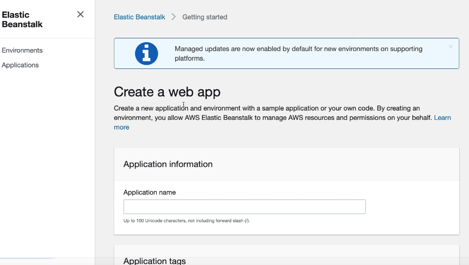
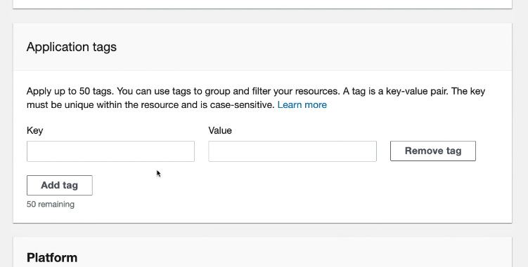
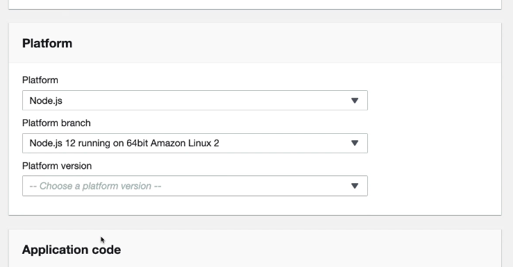
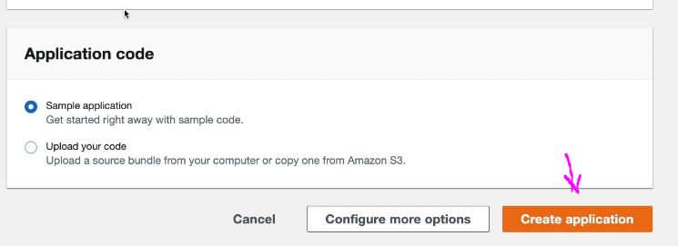
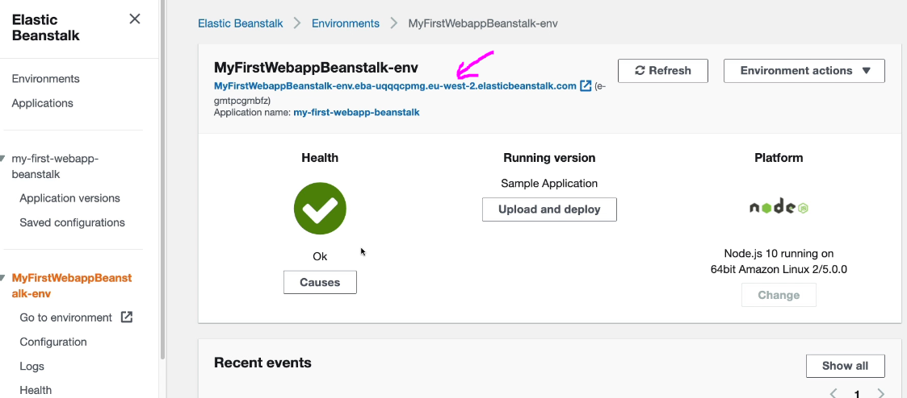

Search for elasticbeanstalk, open the service and clikc Create Application
First give a name for your app
Optionally provide some tags
Select the platform you want to use
For this simple demo we don't have our own code so we will create some default.
Now you have your new application and environment created for you. Note that this will also create EC2 instance, Security Groups, S3 bucket etc., so you will also need to remove them if you don't want to use the create application anymore.
From the menu on the left you can more info about details for the application.
